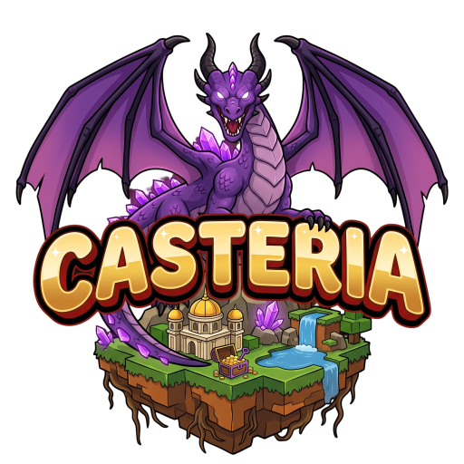
D'une île sur la merjusqu'au trou noir
Serveur Minecraft français·moddé 1.21.1·Windows, Mac et Linux
Prêt pour la suite ?
Ton aventure commence ici.
Le launcher Casteria installe le jeu, les mods et les shaders, puis se met à jour tout seul. Tu cliques sur JOUER, tu arrives au palais.
- 1Télécharge le launcher
- 2Choisis ton pseudo
- 3Clique sur JOUER
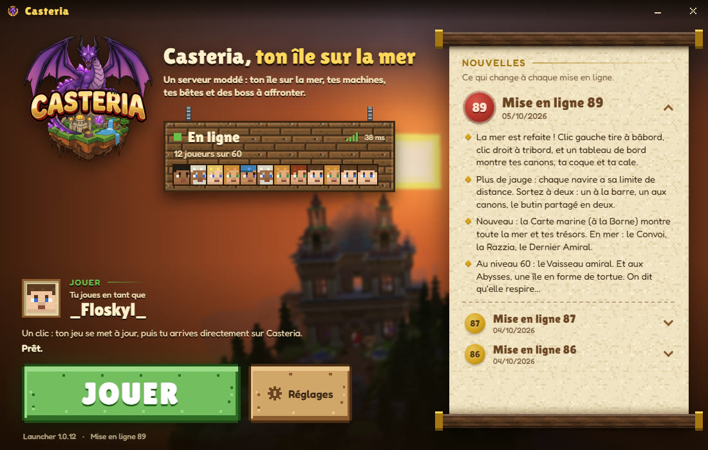

Casteria en cinq chiffres
Une carte au trésor, du port au trou noir
 70niveaux à gravir
70niveaux à gravir 24familiers
24familiers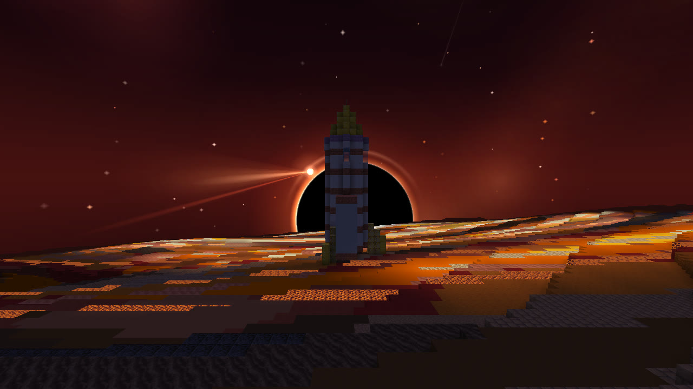
1planète sous un trou noir
Le voyage de Casteria
Six mondes, un seul serveur
Tout commence sur ton île. Tout finit sous un trou noir. Entre les deux, à toi de choisir ta route.
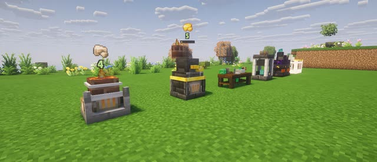
Ton îleDes machines qui produisent toutes seules, des tickets, la roue de /up. Tu repousses les bords de ton île.Par où commencer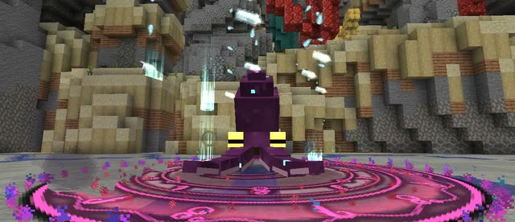
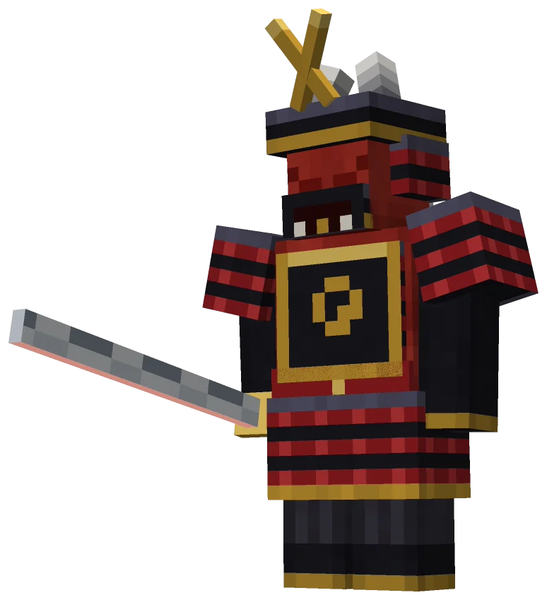
Les bossQuinze arènes, quinze boss. Chacun fait son entrée, et chacun a sa panoplie à pouvoir.Voir les boss La merCinq navires, des pirates à couler, des trésors, et des boss de la mer, chacun sur son île.La mer et les pirates
La planèteRénove l'Esquif, la fusée de ton île, et pars sous le trou noir. L'air y est compté.Voir la planète
La merCinq navires, des pirates à couler, des trésors, et des boss de la mer, chacun sur son île.La mer et les pirates
La planèteRénove l'Esquif, la fusée de ton île, et pars sous le trou noir. L'air y est compté.Voir la planète
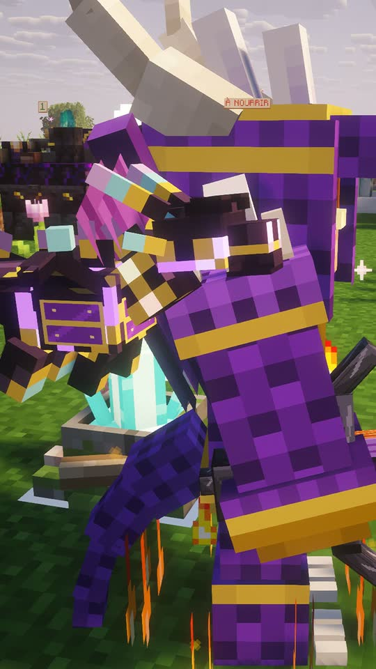
Les familiersVingt-quatre compagnons qui te suivent partout, et qui évoluent avec toi.Les voir
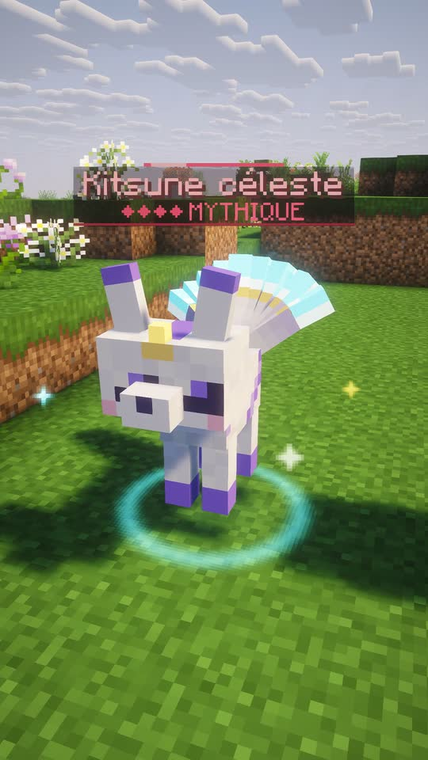
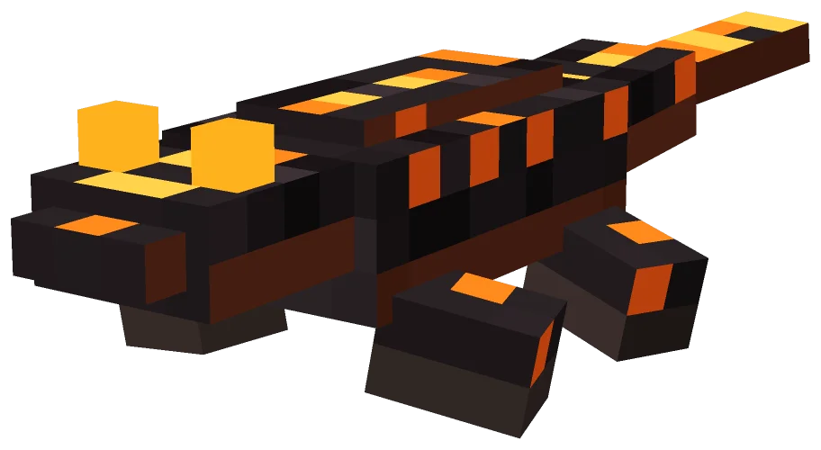
Les enclosDes bêtes communes, rares, légendaires, mythiques, et celles que tu captures à l'œuf.Par où commencer
Les boss
Chaque boss de Casteria fait son entrée
Quinze arènes, quinze boss. Chaque victoire ouvre le suivant, et chacun a ses attaques, ses phases et sa manière de te surprendre. En voici trois. Les autres, tu les découvriras en jeu.
Tire la carte du dessus pour voir la suivante.
Chaque boss a son armure, et chaque armure son pouvoir
Respirer sans fin sous l'eau. Sauter une seconde fois en l'air. Marcher sur la mer avec l'armure du Yéti. Chaque panoplie change ta façon de jouer.
- Chaque pièce donne déjà un bonus ; les quatre ensemble éveillent le pouvoir.
- À la forge, tes éclats de boss deviennent la pièce qui te manque.
- Un mode Héroïque pour ceux qui en redemandent.
Au bout du voyage
Une planète sous un trou noir
Sur ton île, une fusée en ruine : l'Esquif. Remets-la en état, palier après palier, puis décolle. Là-haut, l'air se compte, le sol brûle, et le Dévoreur t'attend.
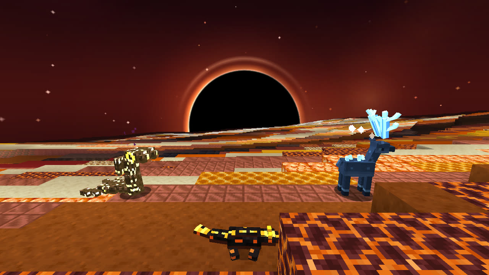
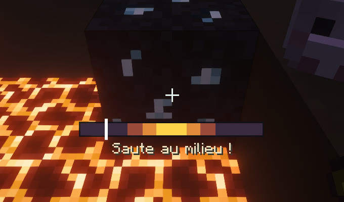
Le journal de bord
Les dernières nouveautés
Le serveur change souvent : voici ce qu'apportent les trois dernières mises à jour. Le launcher les installe tout seul.
Capture les bêtes à l'œuf
En mer ou sur la planète, un œuf de poule capture une bête : sa rareté et ta chance s'affichent au-dessus d'elle. Trois bêtes de la planète pour ton enclos, et /pfc à deux.
La planète du trou noir
Au niveau 60, rénove l'Esquif et pars là-haut. Les niveaux montent jusqu'à 70 : la Forge orbitale, l'Armure de Singularité, et le Dévoreur à affronter.
Un nouvel écran de jeu
Ton solde, tes crédits et ton niveau en haut à droite, des dialogues plus modernes, et en mer une Fosse aux Corsaires 2,5 fois plus grande.
La boutique
Soutiens le serveur, fais-toi plaisir
Les crédits sont la monnaie de la boutique, à part des jetons. Ils s'offrent des choses introuvables ailleurs.
 Des familiers et des bêtes rares
Des familiers et des bêtes rares- Des clés de caisses et des couleurs de pseudo
 Des cadeaux pour tout le serveur
Des cadeaux pour tout le serveur
La suite, c'est toi
On t'attend en jeu.
Ton île t'attend déjà sur la mer. Le launcher est gratuit et installe tout.
Rejoins-nous
Télécharger le launcher Casteria
Pas de mods à chercher, pas de version à régler. Sur Windows, sur Mac et sur Linux : le launcher s'occupe de tout, tu n'as plus qu'à jouer.
Un launcher qui fait tout à ta place
- Il installe le jeu et les mods tout seul. Aucun fichier à déplacer, aucun réglage à faire.
- Il se met à jour tout seul. À chaque nouveauté du serveur, ton jeu suit, et les nouvelles s'affichent.
- Un clic pour jouer. Tu appuies sur Jouer, tu arrives directement sur Casteria.
Télécharge
Choisis ton système juste en dessous et lance le fichier.
Laisse-le installer
La première fois, il prépare tout. Ensuite, il se met à jour tout seul.
Clique sur Jouer
Tu arrives au palais de Casteria. Gaspard t'attend.

Un problème pour installer ?
Ouvre le volet de ton ordinateur : les réponses aux soucis les plus courants.
Sur Windows
Un écran bleu dit « Windows a protégé votre ordinateur »
C'est normal pour un nouveau programme, ce n'est pas un virus.
- Clique sur Informations complémentaires.
- Clique sur Exécuter quand même.
Mon navigateur dit que le fichier est « peu téléchargé »
Choisis Conserver.
Mon antivirus a bloqué le fichier
Ouvre ton antivirus et remets le fichier : le bouton s'appelle souvent Restaurer ou Autoriser.
La première préparation est longue
La première fois, le launcher télécharge le jeu. Ça peut prendre quelques minutes, selon ta connexion internet. Ne ferme pas le launcher.
Le jeu ne se lance pas
- Si une fenêtre de Minecraft est encore ouverte, ferme-la.
- Clique encore sur JOUER.
- Si ça recommence : dans Réglages, clique sur Le journal du jeu (pour le staff) et envoie le fichier le plus récent au staff.
Sur Mac
Quel fichier prendre ?
Ouvre le menu Pomme (en haut à gauche), puis À propos de ce Mac. Il faut macOS 13 ou plus récent.
- Tu lis « Puce Apple » (M1, M2, M3...) : prends la version puce Apple.
- Tu lis « Processeur Intel » : prends la version Intel.
Comment l'installer ?
Double-clique sur le fichier téléchargé : Casteria apparaît à côté. Fais-le glisser dans le dossier Applications.
Mon Mac dit qu'Apple n'a pas pu vérifier Casteria
Ton Mac ne le connaît pas encore. C'est normal, et ça n'arrive qu'une fois.
- Dans le message, clique sur Terminé (pas sur « Placer dans la corbeille »).
- Ouvre Réglages Système, puis Confidentialité et sécurité. Tout en bas, à côté de « Casteria a été bloqué », clique sur Ouvrir quand même, puis tape le mot de passe de ton Mac.
- Un dernier message s'ouvre : clique encore sur Ouvrir quand même.
Mon Mac dit que « Casteria est endommagé »
Ne le mets pas à la corbeille. Télécharge le fichier de nouveau et recommence l'installation.
Sur Linux
Quel fichier prendre ?
- Ubuntu, Linux Mint, Debian, Pop!_OS, Zorin : le fichier .deb.
- Arch, Manjaro, EndeavourOS : le paquet Arch.
- Les autres (Fedora...) : le fichier .tar.gz.
- Pour ceux qui connaissent : l'AppImage.
Installer le fichier .deb
Double-clique dessus : la logithèque s'ouvre. Clique sur Installer, puis tape le mot de passe de ton ordinateur. Rien ne s'ouvre ? Clic droit dans le dossier du fichier, Ouvrir dans un terminal, puis copie cette ligne :
sudo apt install ./Casteria-Linux-x86_64.deb
Installer le paquet Arch
Clic droit dans le dossier du fichier, Ouvrir dans un terminal, puis copie cette ligne :
sudo pacman -U Casteria-Linux-x86_64.pacman
Installer le fichier .tar.gz
Clic droit sur le fichier, Extraire ici. Dans le dossier, double-clique sur installer.sh. Rien ne se passe ? Ouvre un terminal dans ce dossier, puis copie cette ligne :
./installer.sh
Le launcher dit que mon Linux est trop ancien
Il faut Ubuntu 24.04, Linux Mint 22, Debian 13, Fedora 40, Arch ou Manjaro, ou plus récent. Sur un Linux plus ancien, le launcher s'ouvre, mais le jeu ne peut pas démarrer.
Le launcher est gratuit et se met à jour tout seul. À tout de suite sur Casteria !